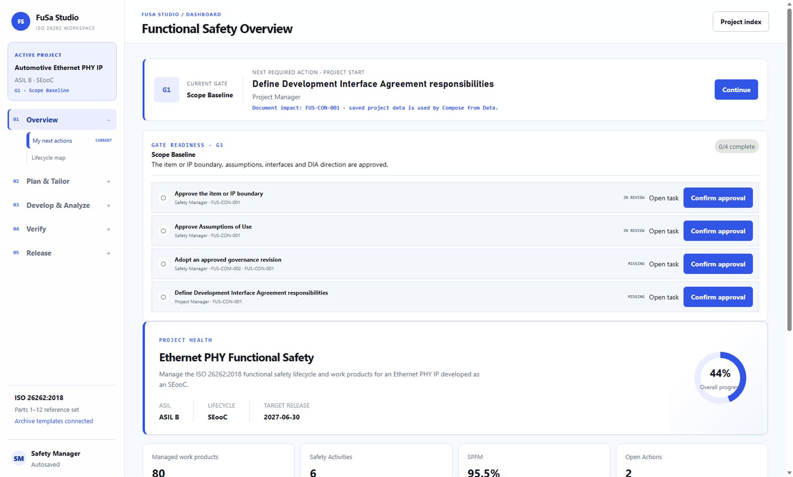
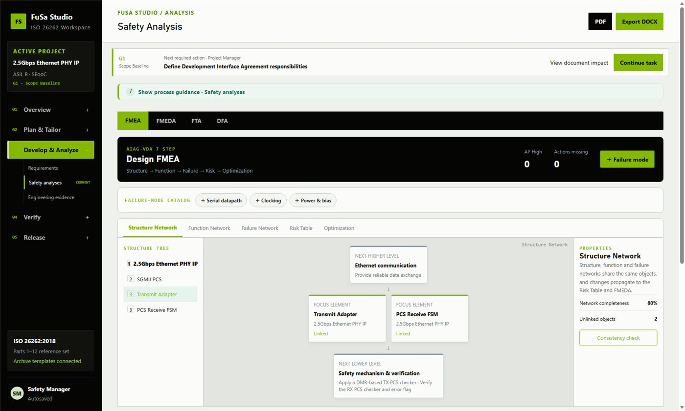
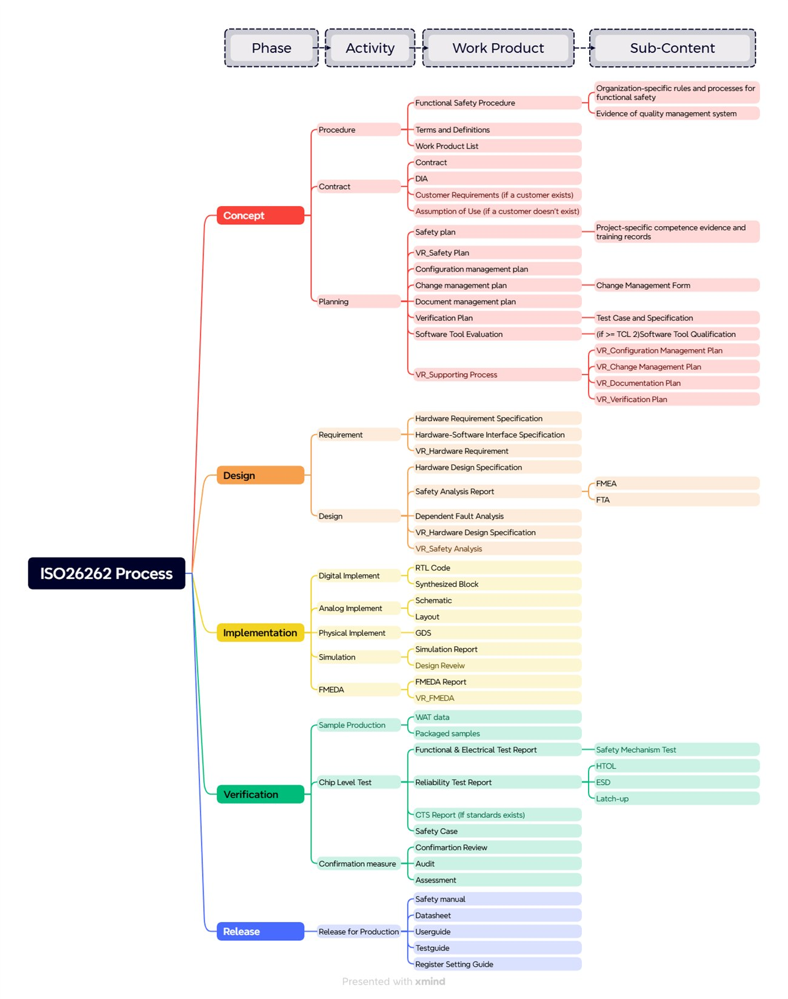
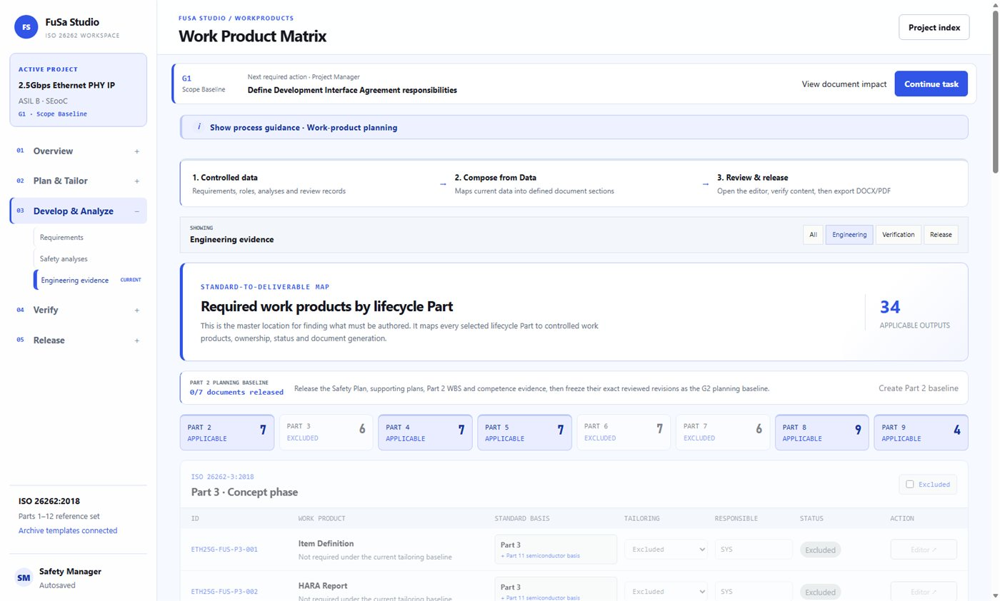
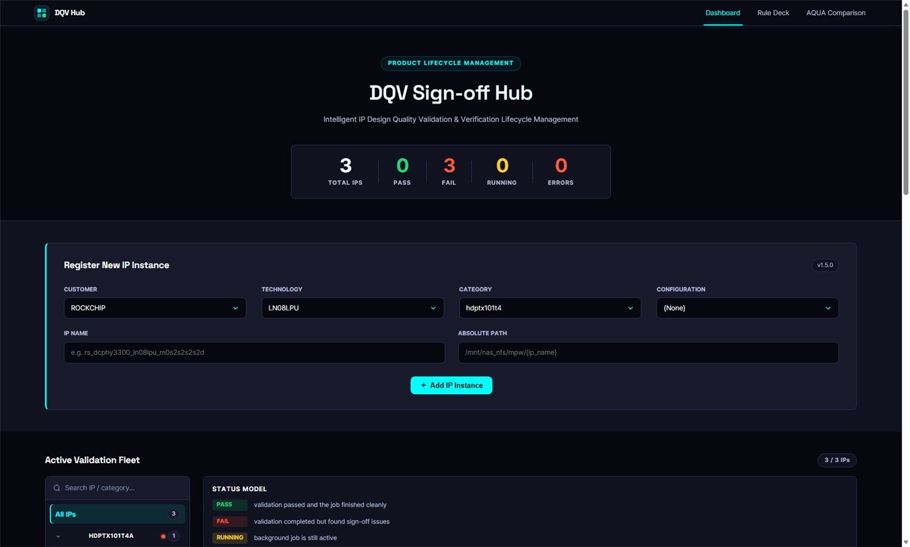
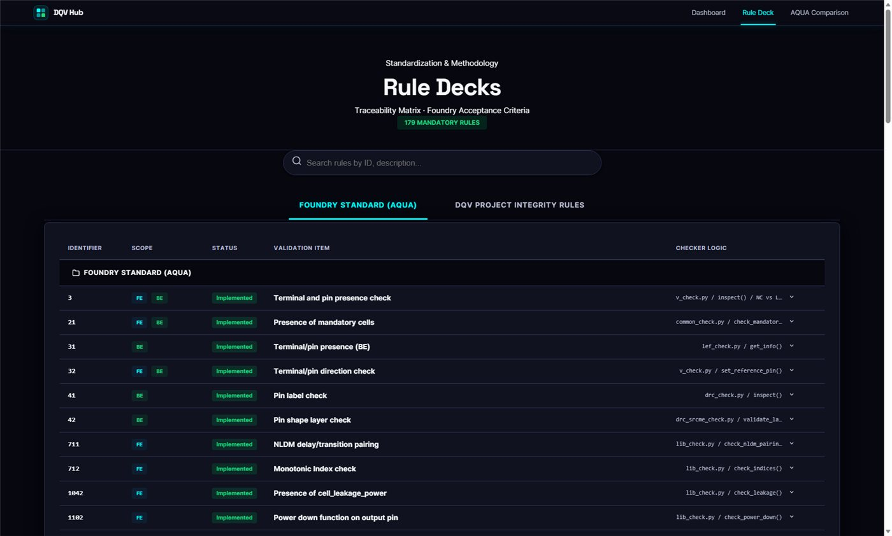
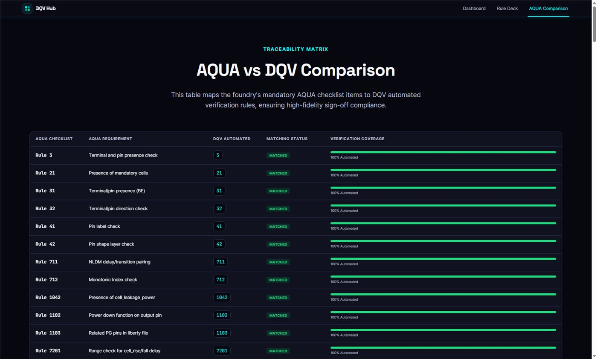
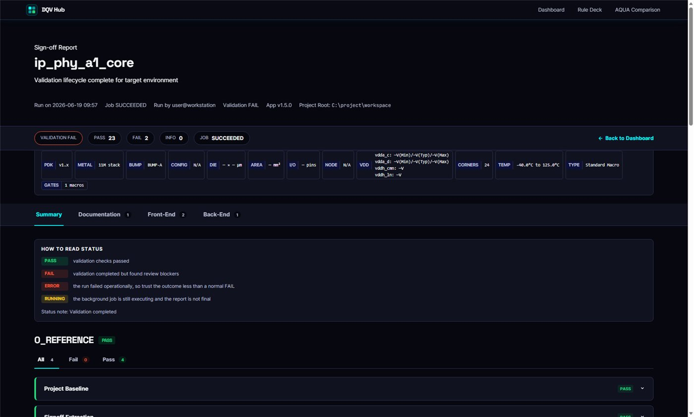

01 · PROJECT
Technical Project Management
납기·의존성·리스크를 재구성해 2개월 분량의 검증을 1개월 내 완료하고 고객 일정을 지켰습니다.
42dot · Technical Product Manager 지원
Technical Product Manager (Software)
자동차용 반도체 IP 팹리스에서 패키지, 실리콘 검증, 기능안전, 내부 소프트웨어 플랫폼을 함께 리드했습니다. 모호한 문제를 시스템 요구사항, 마일스톤, 담당자, 의존성, 기술 리스크, 검증 기준으로 구조화하고, 필요한 도구는 직접 만들어 개발·검증·품질·외부기관 사이의 의사결정을 끝까지 실행으로 연결합니다.
42dot Role Fit
42dot Technical Product Manager가 요구하는 프로젝트 관리, 시스템 요구사항, HW 오너십, 통합·릴리스, 기술 리스크 관리를 각각 수행했습니다. SDV 도메인 자체를 과장하지 않고, 자동차용 반도체와 기능안전 환경에서 검증한 실행 방식을 보여드립니다.
납기·의존성·리스크를 재구성해 2개월 분량의 검증을 1개월 내 완료하고 고객 일정을 지켰습니다.
기능안전 요구를 설계·검증 산출물과 연결하고, 담당자·완료 기준·추적성을 명확히 했습니다.
Substrate 검토부터 Package Build, 샘플 특성, 신뢰성까지 HW lifecycle 전 구간을 오너십 있게 담당했습니다.
179개 필수 룰과 산출물·Checker를 연결해 릴리스 준비도와 Sign-off 근거를 시스템화했습니다.
HTOL 복합 불량을 데이터로 좁히고 소재 변경과 재검증까지 닫아 재발 0을 확인했습니다.
Selected Programs
프로젝트의 기술적 난도를 이해하면서도, 핵심 책임은 개인 분석이 아니라 여러 조직의 실행을 구조화하고 결과를 확보하는 데 두었습니다.
분산된 프로젝트·문서·품질 문제를 하나의 내부 제품 로드맵으로 전환
개발 조직의 이슈·스펙·문서·일정이 Excel, 메신저, 개인 PC에 흩어져 변경 영향과 현재 상태를 파악하기 어려웠습니다. 외부 클라우드 사용 불가와 root 권한 부재도 제약이었습니다.
사용자 업무 흐름을 관찰해 요구를 수집하고 영향도·시급성으로 우선순위를 정했습니다. RPMT, CITS, Spec Center, Document Studio, APQP 등 7개 이상 모듈을 단계적으로 출시하고 피드백을 다음 릴리스에 반영했습니다.
약 54명이 사용하는 운영 제품으로 정착시켰습니다. 프로젝트 상태와 변경 이력, 기술 문서, 고객 이슈를 같은 기준으로 추적할 수 있게 했습니다.
표준 요구를 실행 가능한 산출물·역할·일정·검증 기준으로 전환
사내 경험자가 없는 상황에서 안전 라이프사이클, Project Plan, Safety Plan을 수립하고 활동·산출물·R&R·마일스톤·완료 기준을 정의했습니다.
Item Definition, HARA, FSC/TSC, HRS/HDS, FMEA·FTA·FMEDA와 Verification Plan을 연결했습니다. 설계·검증·품질·외부 컨설팅·TÜV SÜD 사이의 이슈를 우선순위와 담당자로 관리했습니다.
약 8개월간 수십 차례 Review Protocol 이슈를 모두 Close하고 해외 심사관 On-site Audit을 수행해 최종 Assessment 단계까지 진척시켰습니다.
릴리스 판단 기준을 시스템화하고, 복합 불량은 개선·재검증까지 완결
Foundry Standard 179개 필수 룰을 Verilog·LEF·Liberty·DRC·LVS·datasheet·pininfo Checker와 연결했습니다. Job 상태, 검증 결과, 실패 원인을 분리해 Sign-off 근거를 남겼습니다.
77개 칩의 1008시간 HTOL 복합 Failure를 설계·보드·환경 순으로 배제하고 X-Ray, EMMI, 패키지 분석으로 Solder Extrusion → Ball Short를 규명했습니다.
Underfill CTE·Tg·Modulus 비교를 바탕으로 대체 소재를 선정하고 동일 조건의 후속 신뢰성 시험에서 재발 0을 확인했습니다.
패키지·테스트·자동화·신뢰성 조직을 연결해 릴리스 준비도를 확보
Substrate 검토, Package Build, PVT 특성 평가, Test, QA 리포트, HTOL/HBM/CDM/Latch-up 계획과 공인 시험기관 의뢰까지 샘플 lifecycle을 담당했습니다.
디지털팀의 Test Vector·C code·FPGA, 품질 측의 LabVIEW·Python 자동화·QA 리포트, 패키지 및 시험기관의 조건을 정렬해 입력물과 완료 기준을 관리했습니다.
설계–패키지–테스트 사이의 변경 영향을 빠르게 식별하고, 샘플 상태와 기술 리스크를 근거 기반으로 공유하는 검증·보고 체계를 운영했습니다.
1개월 지연된 프로젝트의 의존성과 자원을 다시 설계해 고객 일정을 회복
Substrate PCB 이슈로 칩 입고가 1개월 지연됐지만, 기존 고객 납기는 유지되어 2개월 분량의 검증을 1개월 안에 끝내야 했습니다. 장비와 인력 의존성이 가장 큰 리스크였습니다.
디지털·아날로그·품질 업무를 시험 선후관계와 장비 가용성 기준으로 재배치했습니다. 필수 검증과 후속 분석을 구분하고 담당자·체크포인트·의사결정 시점을 명확히 해 병목을 매일 조정했습니다.
2개월 분량의 검증을 1개월 내 완료해 고객 납기를 준수했습니다. 이후 반복되는 측정 병목을 줄이기 위한 전담 측정 체계 마련에도 연결했습니다.
Functional Safety
사내에 기능안전 경험자가 없는 상태에서 회사 최초의 ISO 26262 프로그램을 주관했습니다. 표준을 직접 분석해 안전 라이프사이클을 정의하고, 실제 고객 프로젝트(Ethernet PHY IP)를 Pilot으로 Part 2·3·4·5·8·9를 산출물과 검증으로 전개했습니다.
반도체 IP는 최종 아이템이 아니므로 SEooC로 개발했습니다. 상위 시스템을 가정해 Assumption of Use(AoU)를 직접 정의하고, Item Definition과 HARA를 가정 기반으로 수행한 tailoring 논리를 심사에서 인정받았습니다.
Safety Goal에서 FSC/TSC, 다시 HRS·HDS로 요구사항을 단계적으로 전개했습니다. 안전목표 → 안전요구사항 → 검증결과를 잇는 양방향 추적성 매트릭스를 구축해 근거를 남겼습니다.
FMEA로 고장모드를, FTA로 고장경로를 도출했습니다. Minimal Cut Set이 single-order인 블록에서 단일점 고장을 식별하고, 면적 영향을 정량 측정해 출력단 부분 이중화(DMR)를 설계팀과 합의했습니다.
SN29500 · IEC TR 62380 기반 Base Failure Rate에 Part 11의 다이 레벨 고장모드 분포를 매핑했습니다. Permanent와 Transient를 구분해 산정하고 SPFM·LFM·PMHF로 목표 충족을 확인했습니다.
DIA(개발협력협약), Configuration·Change Management, Safety Case, Safety Manual을 정비했습니다. Part 8 기준으로 Software Tool Qualification(TCL 평가)을 수행해 검증툴의 신뢰성 근거를 확보했습니다.
약 8개월간 TÜV SÜD Review Protocol 지적사항을 영역·우선순위·담당자로 분류해 전건 Close했습니다. 해외 심사원의 영어 On-site Audit을 수행해 최종 Assessment 단계까지 진행했습니다.
* 부품(IP) 레벨 SEooC 기준으로 수행한 활동입니다. 위 지표는 ISO 26262가 정의한 ASIL B 목표값이며, 프로젝트의 실제 산정 결과와 산출물 내용은 고객·회사 기밀이라 공개하지 않습니다.
Software I Built
기획에서 멈추지 않고 Python·Flask·Rust로 사내 품질·기능안전·릴리스 업무를 실제 동작하는 소프트웨어로 구현했습니다. 외부 클라우드와 root 권한이 없는 폐쇄망 환경에서 Podman Rootless 기반으로 배포·운영했습니다. 아래는 직접 설계·개발한 대표 제품입니다.
품질경영 통합 플랫폼 · 54명 사용
흩어져 있던 프로젝트·이슈·스펙·문서·품질 데이터를 하나의 플랫폼으로 통합했습니다. RPMT(프로젝트 관리), CITS(고객 이슈 추적), Spec Center, Document Studio, APQP 등 7개 이상 모듈을 직접 기획·개발·출시하고 피드백을 릴리스에 반영했습니다.






ISO 26262 라이프사이클·산출물 관리 도구 (개인 프로젝트)
회사 업무와 별개로, 기능안전 실무에서 느낀 불편을 직접 풀어보려고 혼자 만들고 있는 사이드 프로젝트입니다. 인증 대응에 사용한 도구는 아니며, ISO 26262 라이프사이클을 게이트·산출물·분석·증거로 구조화하는 방식을 실험하고 있습니다.
Design Quality Verification 릴리스 게이트
Foundry Standard 179개 필수 룰을 Verilog·LEF·Liberty·DRC·LVS·datasheet·pininfo Checker와 연결해 릴리스 판단을 시스템화했습니다. Job 상태, 검증 결과, 실패 원인을 분리해 관리하고 Sign-off 근거를 남깁니다.




Operating Principles
기술 프로젝트는 완벽한 정보가 모인 뒤 시작되지 않습니다. 불확실성을 숨기기보다 쟁점과 가정을 드러내고, 검증 가능한 기준으로 다음 의사결정을 만듭니다.
Career Path
소자·공정 이해, 계측 자동화, 샘플 칩 검증, 기능안전, 내부 플랫폼 운영을 거치며 기술 조직 사이의 언어와 의존성을 이해하게 됐습니다.
졸업석차 1/18. 반도체 소자·공정·회로를 학습하고 IDEC 시스템반도체설계 디지털트랙에서 Verilog·FPGA 기반 설계와 검증을 경험했습니다.
제벡계수·전기전도도 측정과 데이터 분석을 수행했습니다. LabVIEW 자동 계산·저장 기능을 구현해 3일 이상 걸리던 측정 업무를 1일로 단축했습니다.
MPW 샘플 Build·검증·신뢰성·Failure Analysis, ISO 26262 프로그램, LabVIEW 자동화, QMS·FuSa Studio·DQV Sign-off Hub를 직접 개발·운영합니다.
TPM Toolkit
도구 목록보다 요구사항과 리스크를 어떻게 구조화하고, 개발 조직이 실제로 움직일 수 있는 정보로 바꾸었는지를 중요하게 생각합니다. 필요할 때는 도구를 직접 만들어 문제를 닫습니다.
42dot · Technical Product Manager (Software) · Pangyo